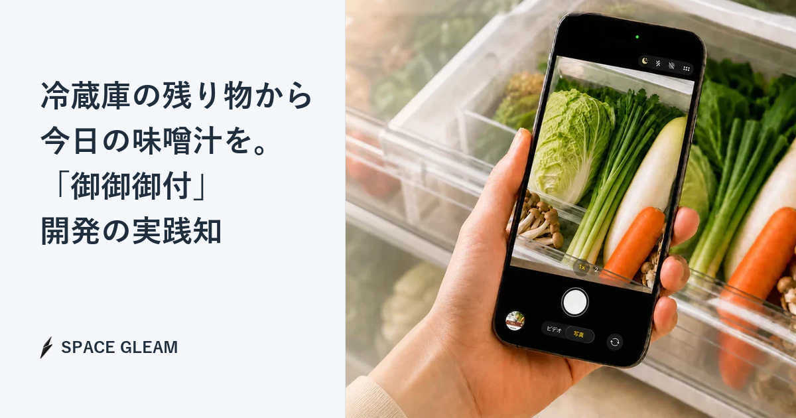

「冷蔵庫に中途半端に残った豆腐と、賞味期限の近い長ねぎ、使い道に困るオクラがある。これでどんな味噌汁が作れるだろうか？」
こうした日常の小さな悩みを解決するために、SPACE GLEAMが開発した自社サービスが「御御御付（おみおつけ）」です。
御御御付は、スマートフォンで冷蔵庫の具材を撮影するだけで、AIが食材を認識し、登録済みの具材データをもとに、その日の一杯に合う味噌汁レシピと栄養データを提案するWebアプリケーションです。
「AIをシステムに組み込むだけ」のプロトタイプであれば、短期間で作れる時代になりました。
しかし、実際にユーザーが使える本番クオリティ의サービスとして運用するには、AIの出力ゆらぎ、データ設計、UIでの補正、栄養計算、シェア体験など、いくつもの技術的な課題を乗り越える必要があります。
本記事では、御御御付の開発過程で得られた、「本当に使えるAIシステム」を設計するための4つの実践知を紹介します。
実践知1：LLMの出力ゆらぎを吸収する「5段階のマッチング・リゾルバ」
AI画像認識を実装する際、最も単純なアプローチは「撮影された写真をLLMに送り、検出した食材名の配列を受け取ること」です。
しかし、実際の運用では、この設計だけではすぐに限界が出ます。
ユーザーが撮影する写真には、暗い冷蔵庫の中、半分に切られた玉ねぎ、パッケージに入った状態の食材など、さまざまなケースがあります。さらに、AIが返すテキストにも必ず表記のゆらぎが発生します。
例えば、同じ食材でも以下のように出力される可能性があります。
- たまねぎ
- タマネギ
- 玉ねぎ
- onion
これらをプログラムのデータベースキーにそのままマッピングしようとすると、不一致エラーが多発します。
この課題を解決するため、御御御付では5段階のマッチング・リゾルバを構築しました。
1. AI直接IDマッピング
プロンプト内で、AIに対して可能な限り定義済みの具材IDで出力するよう指定します。
例：
tofuwakamedaikon
2. 名前完全一致
出力された文字列が、システムに登録されている具材の正式名と完全一致するかをチェックします。
例：
- 大根 =
daikon - 豆腐 =
tofu
3. 静的エイリアス辞書照合
「だいこん」→「大根」のように、あらかじめ定義した日本語の表記ゆれ・別名辞書と照合します。
AIの出力は必ずしも表記が一定ではありません。そのため、正式名称だけでなく、ひらがな、カタカナ、漢字、一般的な呼び方などを吸収できる辞書を用意しています。
4. 正規化名一致
カタカナ・ひらがな・アルファベットの変換、スペースのトリミングなどを行い、標準化した状態で一致判定を行います。
たとえば、余分な空白や表記の違いを取り除いたうえで比較することで、単純な文字列一致では拾えない候補も認識できるようにしています。
5. 部分一致・類似度判定
それでも一致しない場合は、文字列の類似度をもとに、最も近い具材候補を推測します。
ただし、曖昧な推測をそのまま確定させると誤認識につながる可能性があります。そのため、マッチングエンジンが確信を持てなかった具材については、単にエラーとして処理するのではなく、「確認が必要な候補」としてUIに提示し、ユーザーがドロップダウンから手動選択・補正できる設計にしました。AIの不確実性をシステム側でカバーしつつ、最終的な決定権を人間に委ねることで、認識エラーによるユーザーの離脱を劇的に防ぐことに成功しています。
実践知2：複数具材を1鍋で成立させる「時間差レシピ合成」
御御御付には、定番の豆腐・わかめ・大根から、変わり種の具材まで、多様な食材データが登録されています。
これらを組み合わせて作り方を自動提示する際、すべての具材を一律に「鍋に入れて煮てください」としてしまうと、レシピとして破綻します。
火の通りにくい根菜は生煮えになり、わかめや長ねぎのような具材は火を通しすぎて風味や食感が落ちてしまいます。
この課題を解決するため、御御御付では各具材の特性を分析し、加熱タイミングを4つのステートとしてメタデータ化しました。
early：冷水から煮る
大根、玉ねぎ、ごぼう、じゃがいも、里芋など。
火が通りにくく、水からじっくり煮ることで甘みが出やすい根菜類です。
middle：だしが温まってから煮る
豆腐、厚揚げ、きのこ類、豚肉など。
中火で数分加熱することで、具材の旨味や食感が出やすい食材です。
late：味噌を溶く直前・直後に入れる
長ねぎ、小松菜、わかめ、キャベツなど。
火を通しすぎると色や風味が落ちやすい葉物・海藻類です。
after：盛り付け後に加える
三つ葉、みょうが、バター、チーズなど。
香りや食感を活かしたいトッピング、または余熱でなじませたい具材です。
システムは、ユーザーが選択した具材をこれらのステートに分類し、調理手順を動的に組み立てます。
例えば、大根・豆腐・長ねぎ・バターを選んだ場合、以下のような流れになります。
1. まず、earlyに分類された大根を水から入れて火にかけます。
2. 沸騰したら、middleの豆腐を加えて中火で数分煮ます。
3. 火を止めて味噌を溶き、lateの長ねぎを加えて余熱で火を通します。
4. お椀に盛り付けた後、afterのバターをのせて完成です。
このように、データ設計に調理手順の考え方を組み込むことで、複数の具材を組み合わせても破綻しにくい、時間差レシピの自動生成が可能になります。
AIにすべてを任せるのではなく、食材ごとのルールをデータとして持たせる。この設計によって、御御御付は単なる文章生成ではなく、実際の調理に使いやすいレシピ提案を実現しています。
実践知3：シェアを促す「決定性ハッシュ命名アルゴリズム」
せっかく作った自分だけの味噌汁は、誰かにシェアしたくなる体験にしたい。
しかし、単に「豆腐とキムチとチーズの味噌汁」と表示されるだけでは、SNSでの拡散力は弱くなります。
そこで御御御付では、具材の組み合わせごとにユニークな名前を自動生成する命名システムを開発しました。
この命名ロジックでは、具材カテゴリの組み合わせや、選ばれた食材の特徴をもとに、再現性のある名前を生成します。
カテゴリの組み合わせによる表現
例えば、野菜カテゴリと海藻カテゴリが組み合わさった場合には、以下のような名前が生成されます。
- 畑と海の出会い汁
- 大地の恵み香る潮の一杯
同じ組み合わせであれば、毎回同じ名前になるように、決定性のあるハッシュロジックを使っています。これにより、ランダム性による面白さを残しながら、ユーザーが同じレシピを再現・共有しやすい設計にしています。
変わり種具材の検知
また、チョコレートやポテトチップスのような変わり種の具材が含まれる場合は、システム側で実験的な組み合わせとして検知し、通常とは少し違うネーミングを行います。
例：
- 禁断の豆腐×チョコ味噌汁
- 未知なるポテチの一杯
こうした名前づけにより、ユーザーは「自分の選んだ具材にどんな名前がつくのか」を楽しめます。味噌汁を作るだけでなく、結果を保存したり、SNSにシェアしたくなる体験へとつなげています。
実践知4：信頼性を高める「栄養素計算と結果画像保存」
AIを用いた健康・食事系サービスでよくある課題のひとつが、栄養素の数値に対する信頼性です。
AIがざっくりと推測した数値だけでは、ユーザーにとって信頼しにくい情報になってしまいます。
御御御付では、栄養素の算出にAIの推測値をそのまま使うのではなく、食品成分データをもとにしたプログラム演算を採用しています。
各具材の標準使用量を設定し、エネルギー、たんぱく質、脂質、炭水化物、鉄分、カルシウム、食塩相当量などを、味噌の種類による差異も含めて合算します。
例：
- 大根：30g
- 豆腐：50g
- わかめ：標準使用量
- 白みそ：標準使用量
このように、具材と分量をデータとして扱うことで、AIの曖昧な推測ではなく、一定のルールに基づいた栄養表示が可能になります。
さらに、診断結果やレシピ結果は、画像として保存できるようにしています。ユーザーは、自分の味噌汁の組み合わせや栄養データを、結果カードとして無料でダウンロード・保存できます。
この「データに基づく提案」と「保存・共有しやすい結果画面」の組み合わせにより、御御御付は単なる一発ネタのAIアプリではなく、日々の食事選びに使える実用ツールとしての価値を高めています。
結論：自社開発から得た実践知を、受託開発へ還元する
御御御付というプロダクトの開発を通じて得た知見は、SPACE GLEAMの受託開発や新規事業支援にも直接活かされています。
AIを使ったシステム開発では、モデルを呼び出すだけでは不十分です。実際の業務や日常の中で使われるサービスにするには、AIの不確実性をどう扱うか、データベースとどう接続するか、ユーザーが補正できるUIをどう設計するか、結果をどのように保存・共有可能にするかまで考える必要があります。
例えば、次のような不安を持つ企業は少なくありません。
- AIを導入したいが、認識率の低さで現場が使わなくなるのではないか。
- 複雑な業務ルールを、AIを使ってどうシステム化すればよいのか。
- AIの出力を、既存のデータベースや業務フローにどう接続すればよいのか。
- プロトタイプでは動いたが、本番運用に耐えられる設計にできるのか。
SPACE GLEAMでは、自社サービスを実際に作り、運用し、改善する中で得た知見をもとに、こうした課題に対して現実的な設計・実装を提案しています。
技術検証だけで終わらせず、ユーザーが実際に使えるところまで落とし込む。そのための設計力と実装力こそが、SPACE GLEAMの強みです。
御御御付は、冷蔵庫にある具材から今日の味噌汁を決めるための小さなサービスです。しかし、その裏側には、AIの出力をどう受け止め、データとどう接続し、ユーザー体験としてどう成立させるかという、AIシステム開発に共通する実践知が詰まっています。
SPACE GLEAMは、こうした自社開発で得た知見をもとに、AIを活用した Webサービス開発、業務システム開発、新規事業開発を支援しています。

御御御付（おみおつけ）｜具材を撮るだけで味噌汁レシピ・栄養を自動提案
冷蔵庫の余り物写真からAIが食材を認識し、400種の具材データベースから最適なレシピと正確な栄養バランス（カロリー・たんぱく質・塩分など）を提案するWebアプリです。